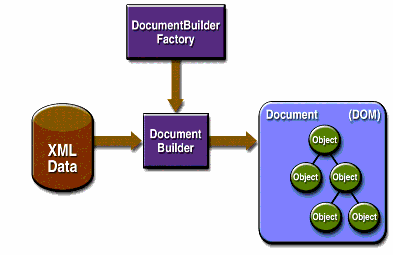

La figura siguiente muestra las IPAs del DOM en acción.

Use la clase javax.xml.parsers.DocumentBuilderFactory para obtener una instancia de
DocumentBuilder, y use esa instancia para producir un objeto Document que cumple con
la especificación DOM. El constructor que obtiene, en realidad, se determina por la propiedad del sistema
javax.xml.parsers.DocumentBuilderFactory, que selecciona la factoría de implementación que se usa
para producir el constructor. (El valor predeterminado de la plataforma puede ser sobreescrito desde la línea
de comandos).
Puede también usar el método DocumentBuilder newDocument() para crear un
Document vacío que implementa la interfaz org.w3c.dom.Document. Alternativamente,
puede usar uno de los métodos de análisis del constructor para crear un Document desde los datos
XML existentes. El resultado es un árbol DOM como el que se muestra en la Figura
anterior.
Nota — Aunque son llamados objetos, las entradas en un árbol DOM son en realidad estructuras de
datos de nivel bastante bajo. Por ejemplo, considere esta estructura:
<color>blue</color>. Hay un elemento nodo para la etiqueta color, y bajo ella hay
un nodo de texto que contiene los datos, blue!. Este problema se explorará en profundidad en la lección DOM de
este tutorial, pero los desarrolladores que esperan objetos generalmente se sorprenden al encontrar que
invocar getNodeValue() en el nodo del elemento no devuelve nada. Para un árbol realmente orientado
a objetos, vea la IPA de JDOM en
http://www.jdom.org.
La implementación del Modelo de Objeto de Documento se define en los paquetes listados en la siguiente Tabla .
Tabla Paquetes DOM
|
Paquete |
Descripción |
|---|---|
|
|
Define las interfaces de programación del DOM para documentos XML (y, opcionalmente, HTML), como se especifica por el W3C. |
|
|
Define la clase |